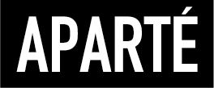
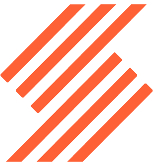

Oriane JOZELEAU
Réceptionniste & Médiatrice Culturelle
29 ans
Saumur, France
Permis B, véhiculée
06 34 58 79 85
oriane.jozeleau@hotmail.com
.
Langues
Centres d'intérêts
- 🎨 Arts et création : dessin, peinture, broderie, théâtre...
- 📖 Lecture et écriture : participation à un atelier d'écriture de 2018 à 2021
- 🏛️ Histoire et patrimoine
- 💻 Développement numérique
Expériences professionnelles
Chargée d’animation auprès des publics, agent d’accueil et de billetterie
Cadre noir, Saumur (49)
02/2024 - 11/2024 (10 mois)
Agent d’accueil, de médiation et de surveillance
Domaine de Chaumont-sur-Loire (41)
10/2023 - 01/2024 (3.5 mois)
Responsable de site
Les Rendez-vous de l’Histoire de Blois (Centre Européen de Promotion de l'Histoire, 41)
Responsable de site en 2020, 2021, 2023 et 2024
Réceptionniste / Animatrice du club enfants
Camping Sites & Paysages les Saules, Cheverny (41)
04/2023 - 09/2023 (6 mois)
07/2022 - 08/2022 (1 mois)
Guide touristique
Arctic Attitude, Rovaniemi (Finlande)
10/2022 - 03/2023 (5 mois)
02/2022 - 03/2022 (2 mois)
Guide touristique
Château de Villesavin, Tour-en-Sologne (41)
04/2022 - 06/2022 (3 mois) & 09/2021 - 11/2021 (2.5 mois) & 04/2021 - 08/2021 (5 mois)
Agent d’accueil, de médiation et de surveillance
Château de Chambord (41)
12/2021 (2 semaines)
Guide touristique
Nordic Unique Travels, Rovaniemi (Finlande)
2020-2021
Stage de deuxième année de BTS Tourisme
Agence Thomas Cook de Pau (64)
01/2019 - 02/2019 (5 semaines)
Stage de première année de BTS Tourisme
Office de tourisme de Tallinn (Estonie)
05/2018 - 06/2018 (7 semaines)
Formations
Certification "Pass hygiène" (Hygieniapassi en finnois)
Certification qui atteste des connaissances dans le dommaine de l'hygiène alimentaire (effectué en Finlande)
Formation et certification aux gestes de premier secours
Certification Padi, spécifique aux conditions nordiques (RCP et premiers secours)
Licence Professionnelle Protection et Valorisation du patrimoine historique et culturel
Parcours Développement et protection du patrimoine culturel - médiateur du patrimoine | 2021 | 14.20/20
BTS Tourisme
Lycée des Métiers de l'Hôtellerie et du Tourisme de Blois, option chinois | 2019 | 13.31/20
Licence d'Histoire de l'Art
Université de Tours | 2017
Baccalauréat Littéraire
Lycée Dessaignes de Blois, parcours Littérature Étrangère en Langue Étrangère, option théâtre | 2014 | 11.35/20
Logiciels
Réservations & billetterie
- eSeason
-  Aparté
- Asterio
-  Resalys
Création graphique
 Wix
Wix Canva
Canva Krita
Krita Gimp
Gimp
Bureautique
- Pack Office
 Pack Google
Pack Google
Savoir-être
- Communication
- Travail d'équipe
- Adaptabilité
- Créativité
- Rigueur